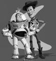
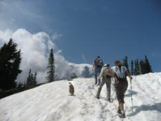

Original
Reconstructed
For my final I chose to complete Gradient Domain Fusion and Lightfield Camera. I will first go over GRF and then cover the lightfield camera after.
This project demonstrates a technique used to blend images into one another through the act of balancing the color values to make it almost seamless.
The preliminary stage of the project surrounds accurately implementing gradient domain fusion on a grayscale image. The result should essentially recreate the exact same image.
This involves solving the optimization of various minimized square differences of gradients across both dimensions.
minimize ( v(x+1,y)-v(x,y) - (s(x+1,y)-s(x,y)) )^2
minimize ( v(x,y+1)-v(x,y) - (s(x,y+1)-s(x,y)) )^2
minimize (v(1,1)-s(1,1))^2
These equations cover every pixel's gradient values as well as comparing the color values of the top 2 corners.
After initializing and filling in a sparse matrix and the constraints, we solve using least squares.
Results:
|
Original |

Reconstructed |
We can see that both the original sample and the reconstructed image are roughly the same, indicating a decent implementation of gradient domain fusion.
This technique essentially performs the same operation as the toy problem, but instead of comparing the gradients of itself, we will minimize the square differences of the gradients from one image with the gradients of another image.
This will put one image as the background, and another image to be inpainted within the background.
By comparing the gradients, we can get values that serve as a balance between both images, causing a more seamless blend/integration.
This can be done by performing a similar operation to the toy problem, while integrating a mask to serve as the location of the blending.
The images were downscaled to allow the process to run better.

Background |

Target |

Objective |

Mask |

Basic Blend |

Poisson Blend |